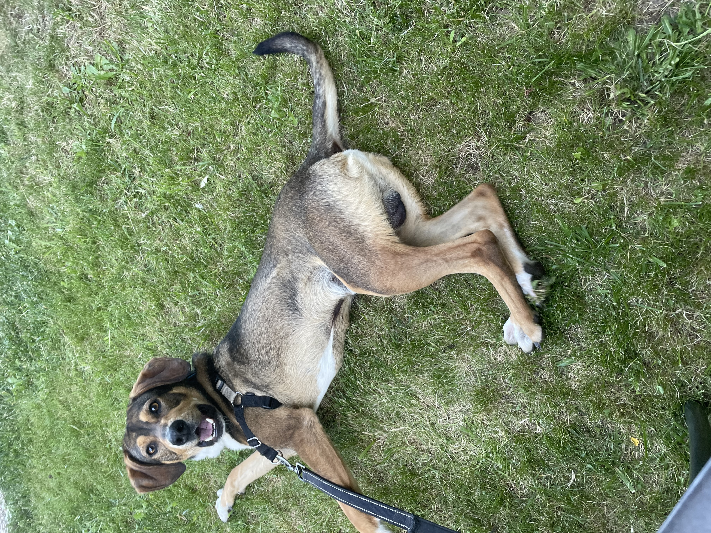
Avventura
L'Esplorazione del Giardino Segreto
Oggi ho scoperto un angolo del giardino che non avevo mai esplorato. C'erano odori nuovi, foglie croccanti e un mistero da risolvere...
Leggi la storiaCiao, sono Ugo! Un cane con un cuore grande come il sole, una coda che non smette mai di scodinzolare e tanti pensieri profondi da condividere con te.
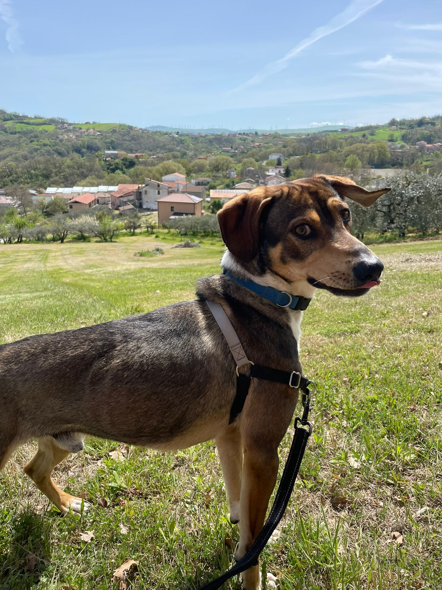
Un cane speciale con un cuore d'oro
Non mordo, non distruggo, non scavo. Abbaia solo per salutare e per dire "ti voglio bene"!
Medito fissando il vuoto, ignoro il caos, ma mai un biscotto. La saggezza arriva dalla pazienza.
Mi piacciono le giornate calde, le carezze lunghe e i pisolini nel raggio di sole sul pavimento.
Ogni crocchetta merita rispetto. Ogni biscotto è un momento sacro. La pazienza premia sempre.
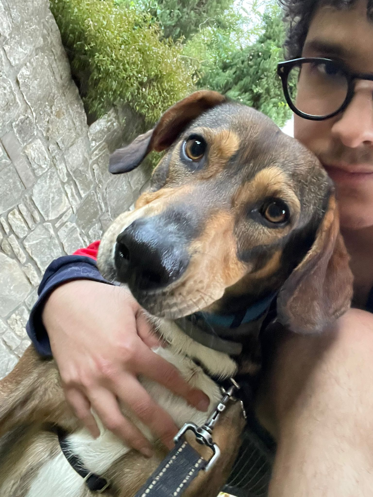
Una storia di amicizia che va oltre le parole. Io sono Francesco, e Ugo è il mio compagno di avventure. Insieme esploriamo il mondo, condividiamo momenti di gioia e creiamo ricordi indimenticabili.
Questo sito è nato per celebrare l'amore incondizionato che un cane sa dare e per ricordare che ogni giorno è un'opportunità per essere felici, proprio come Ugo ci insegna.
ScrivimiMomenti catturati, ricordi indelebili
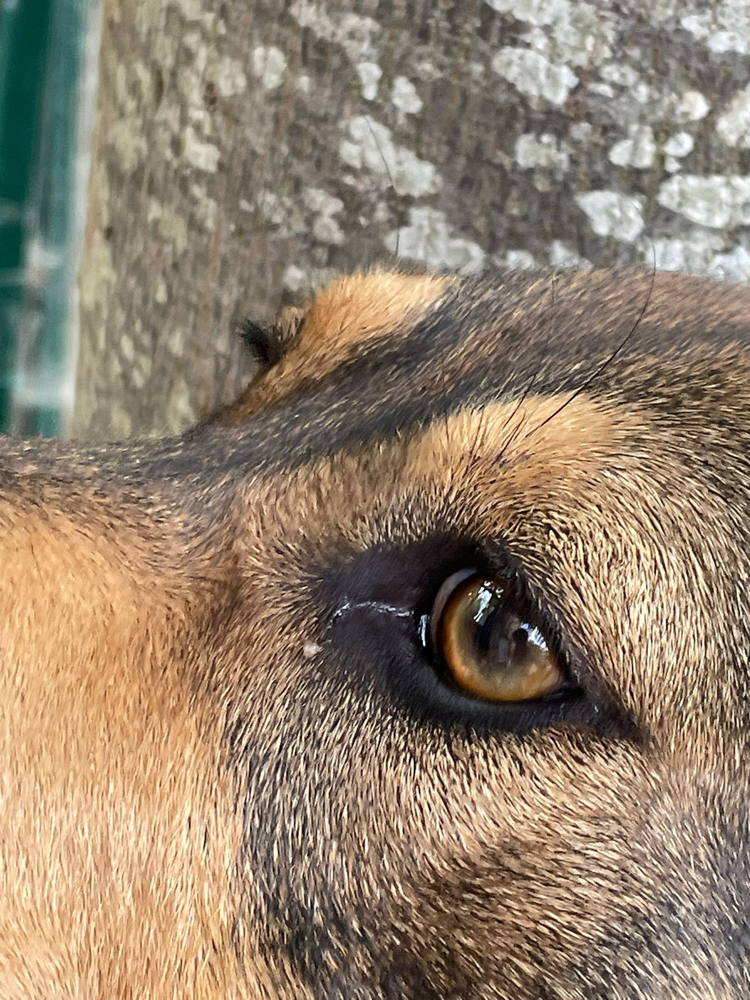
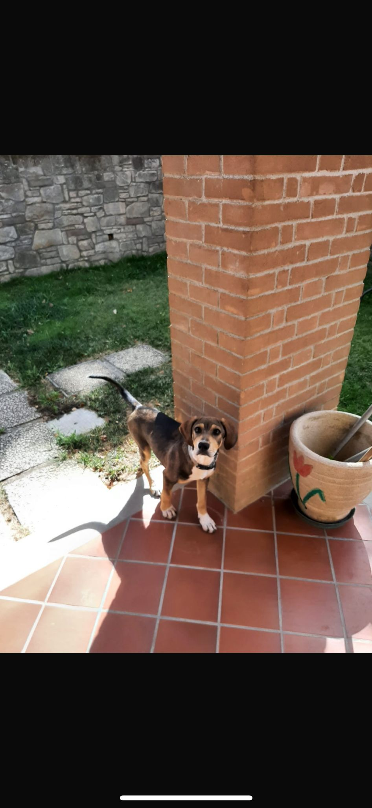
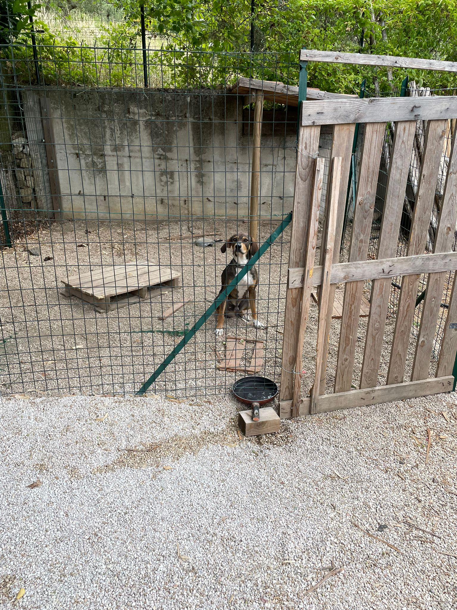
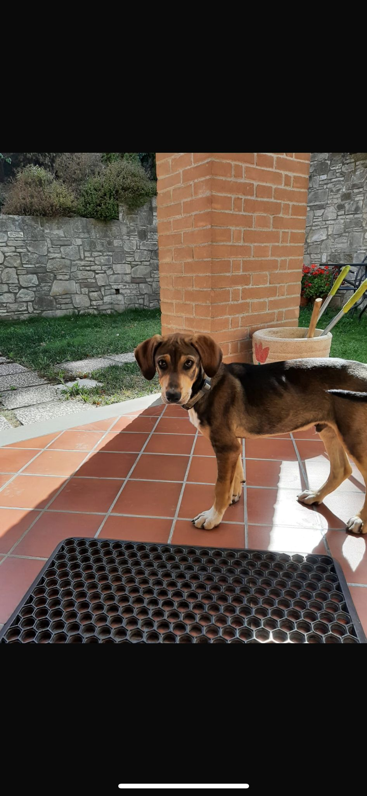
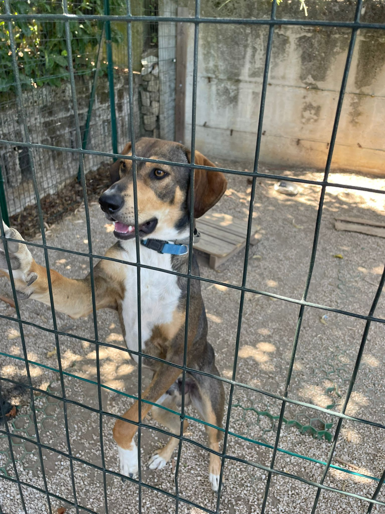
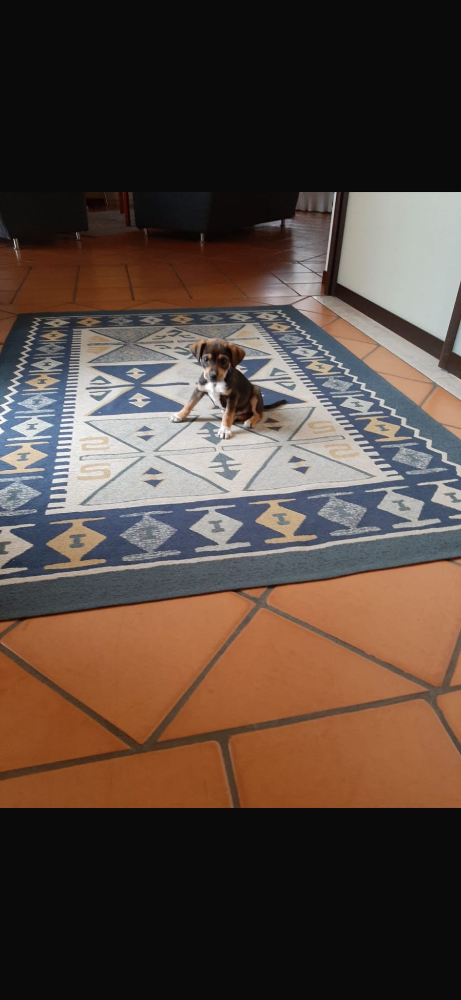
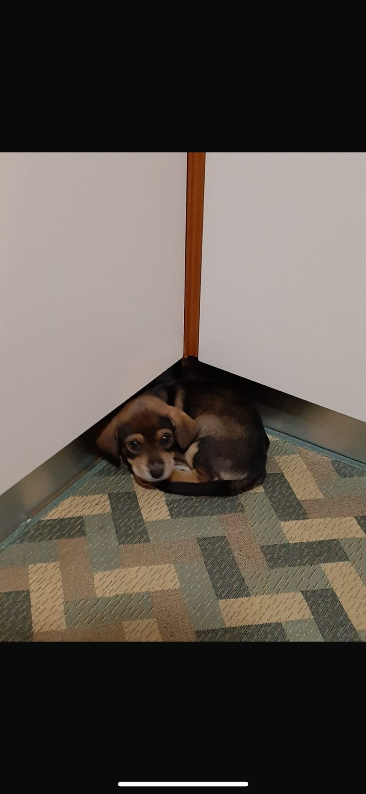
Riflessioni dal divano più saggio del mondo
"La pazienza è la virtù dei cani. Aspetto il mio umano davanti alla porta, e so che tornerà. Sempre."
"Ogni biscotto ha il suo momento. Non bisogna affrettare la felicità, va assaporata un morso alla volta."
"Il sole sul pavimento è il regalo più prezioso. A volte la felicità sta nel trovare la posizione perfetta."
"Non serve abbaiare per farsi sentire. Basta uno sguardo carico d'amore e il cuore di un umano si scioglie."
Cronache di vita quotidiana a quattro zampe

Oggi ho scoperto un angolo del giardino che non avevo mai esplorato. C'erano odori nuovi, foglie croccanti e un mistero da risolvere...
Leggi la storia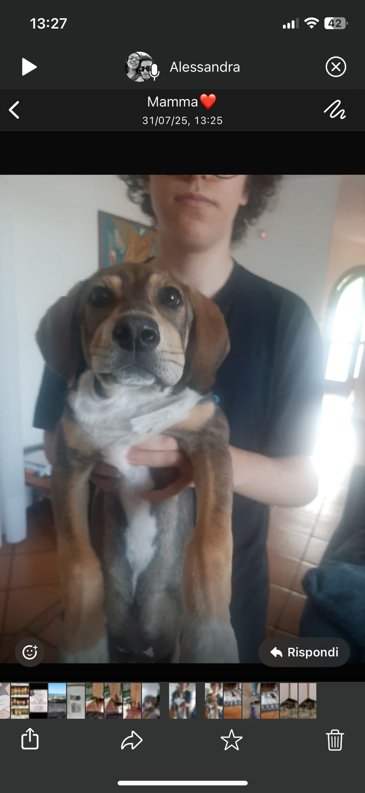
I primi passi, le prime coccole, i primi biscotti. Un viaggio nei ricordi più teneri...
Leggi la storia
Ogni mattina, prima che il mondo si svegli, trovo il mio angolo di pace e rifletto...
Leggi la storia
Ugo adora ricevere messaggi dai suoi amici
Creato con ❤️ da Francesco Archidiacono
Il compagno umano di Ugo